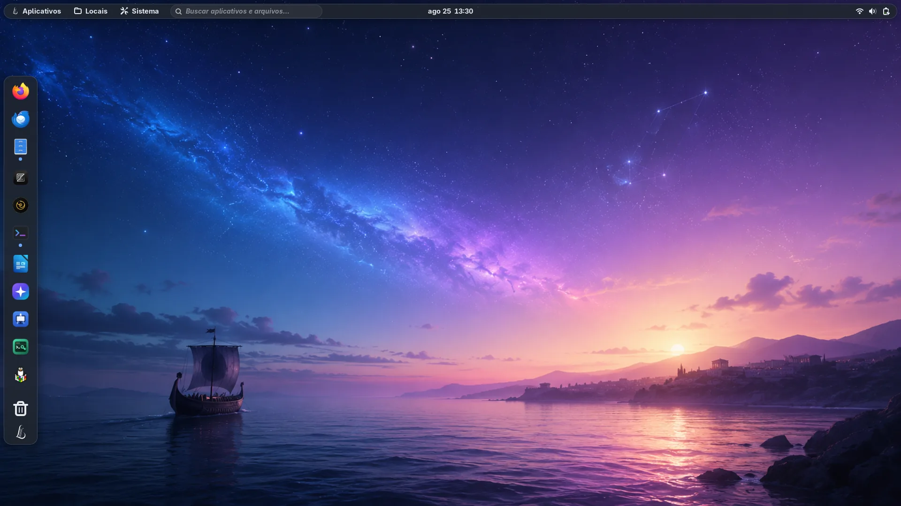
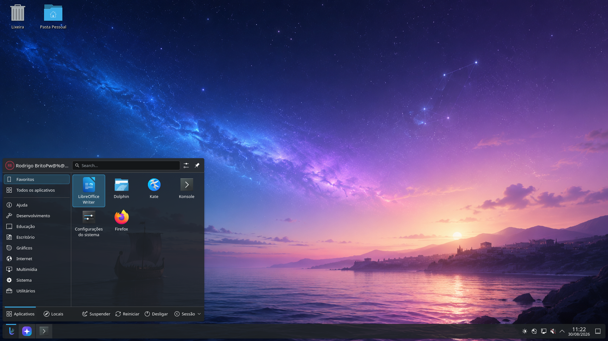
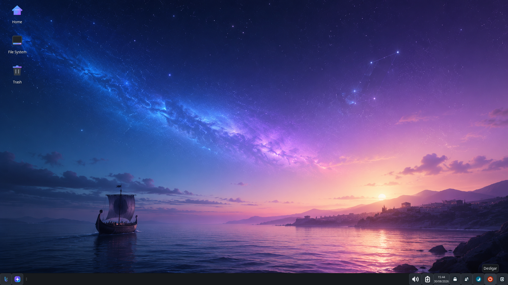

Alpha 6
Para computadores pessoais, com ambiente gráfico e experiência completa do Lyra OS.
Lyra OS 1.0 em desenvolvimento
Um sistema feito para encontrar o equilíbrio entre potência, estabilidade e liberdade — no desktop e no servidor.
Harmonia. Performance. Liberdade.
01 / A ideia
Lyra OS é um projeto pessoal independente de Rodrigo Brito, criado para transformar o desktop Linux em um lugar mais coerente, acolhedor e confiável.
O nome vem da constelação de Lyra: um pequeno desenho no céu com uma identidade marcante. É dessa mesma ideia de clareza e proporção que nasce cada escolha do sistema.

Uma faísca em 2005
Em 2005, assisti a uma palestra de Jon “maddog” Hall. Sua defesa apaixonada do software livre mudou a maneira como eu enxergava tecnologia, comunidade e liberdade.
O Lyra OS nasceu muitos anos depois, mas carrega algo daquele encontro. Obrigado, maddog, por acender essa estrela.
Conhecer a trajetória de Jon “maddog” Hall— Rodrigo Brito
02 / A fundação
O Lyra OS 1.0 usa o openSUSE Leap 16.x como base tecnológica. A versão do Lyra identifica o produto e permanece independente da numeração do Leap.
Em um cenário dominado por bases Arch, Ubuntu e Fedora, o Leap traz uma alternativa sólida para quem quer usar o desktop com tranquilidade — sem abrir mão de performance ou liberdade.
Conhecer o openSUSE03 / O coração
O Vega organiza o essencial e dá ao sistema um ponto de partida simples, claro e humano.
O centro de controle do Lyra OS, pré-instalado e desenhado para deixar as decisões importantes sempre ao alcance.
O Lyra OS vem com o LinuxToys pré-instalado: uma coleção de ferramentas em uma interface gráfica simples e prática, pronta para facilitar tarefas e configurações do dia a dia.
Conhecer o LinuxToysO ecossistema cresce com cuidado. Os demais componentes seguem em desenvolvimento e validação para versões futuras.
04 / A experiência
GNOME e KDE Plasma com o branding do Lyra aplicado com intenção. Duas experiências oficiais, com a mesma identidade e liberdade de escolha.
Interface clara e consistente
Base sólida para o seu dia a dia
Liberdade para personalizar




05 / Para ir além
Um guia completo de instalação, utilização e administração — do primeiro contato ao domínio do sistema, escrito por Rodrigo Brito.
Idiomas da publicação Português e inglês.
07 / Uma nova etapa
O Lyra OS está disponível para desktop e servidor, com imagens para arquitetura x86_64.
Downloads hospedados no SourceForge.
Requisitos de sistema
Confira o perfil adequado para cada edição. Os valores mínimos permitem a instalação; os recomendados oferecem margem para atualizações, aplicativos e serviços.
Para todas as edições do Desktop: firmware UEFI, mídia USB para instalação e conexão com a internet para atualizações. Secure Boot é suportado. GNOME e KDE Plasma usam o mesmo perfil-base; XFCE reduz o consumo esperado, mas mantém margem para atualizações. A instalação usa o disco inteiro; no Server 1.0, o instalador ainda não oferece RAID nem LVM. Requisitos provisórios, sujeitos à validação do gate e da matriz de hardware.